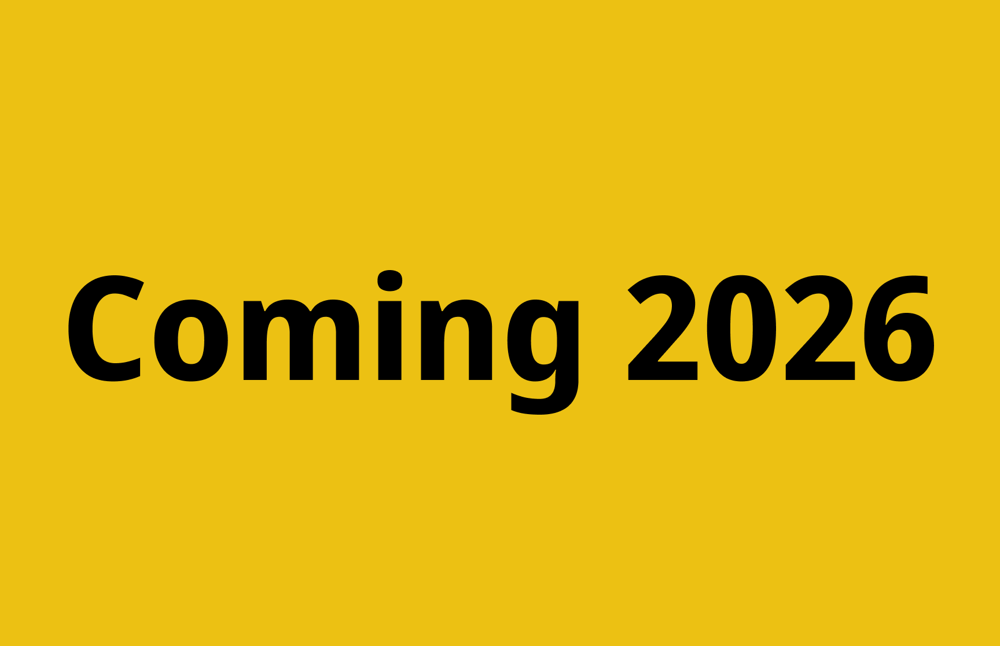

Standort I
Mockumentary
Über das Projekt
- Was
- Mockumentary zu unserem Studium
- Wer
- Skript & Regie von Stephanie Römer und Lisa Strebel, Kamera von Cédric Züllig & Luca Mosberger
- Meine Rollen
- Mikrofonierung der Schauspieler:innen, Boom-Mic-Operator, Audiorestauration